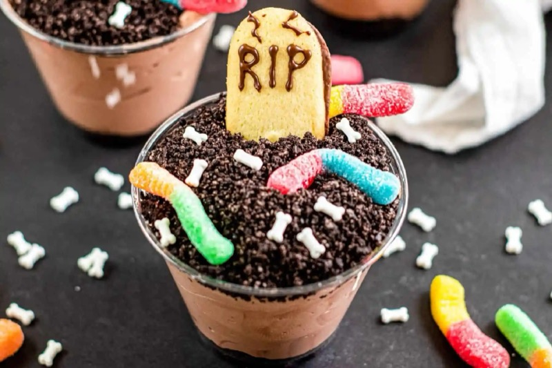
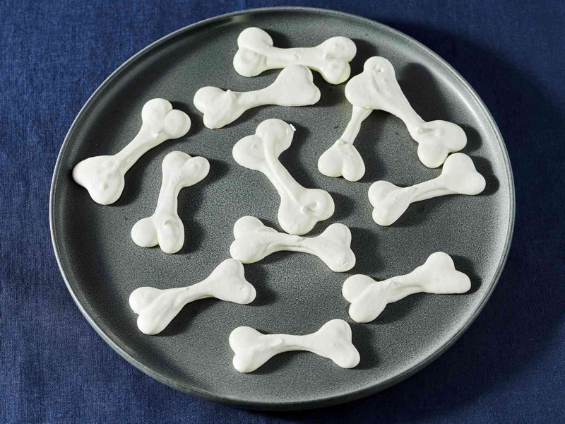
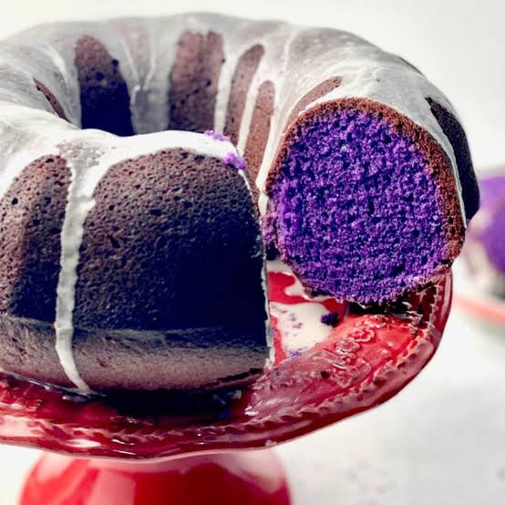
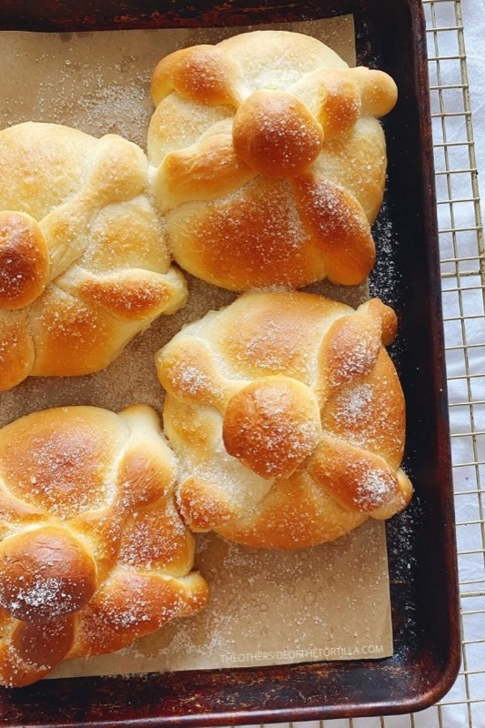
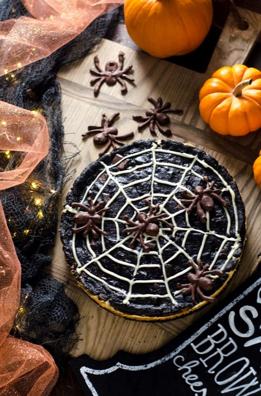
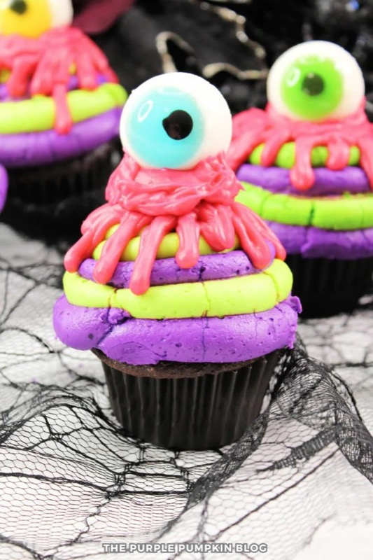
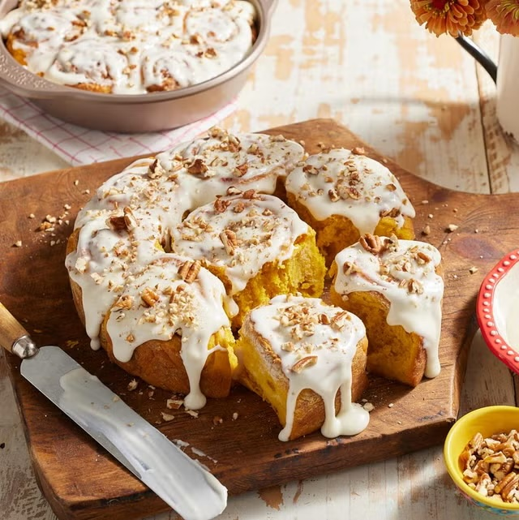
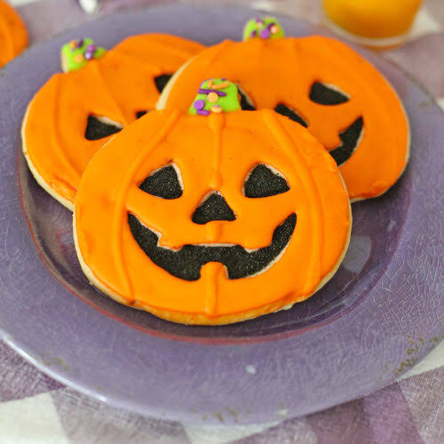
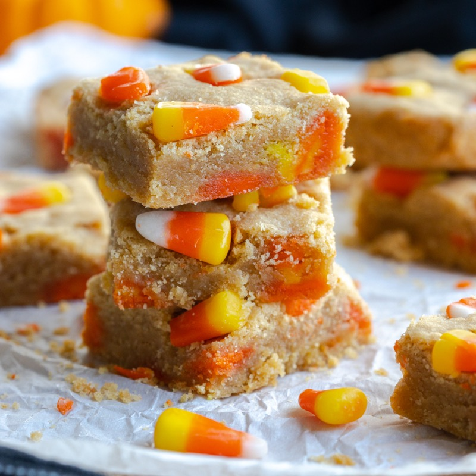
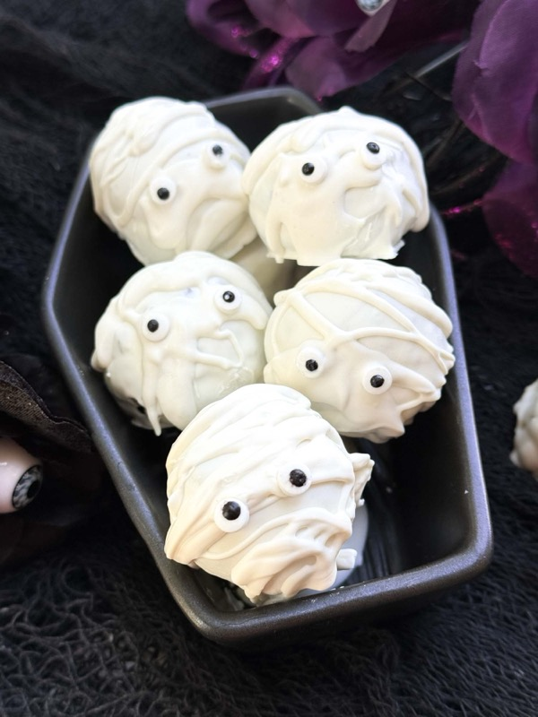

#1
Graveyard Dirt Cake
Layers of chocolate pudding and crushed cookie "dirt" in a pan, with cookie tombstones and gummy worms on top.

#2
Meringue Bones
Piped meringue in little dog-bone shapes, baked low and slow until crisp. Dust with cocoa for an unearthed look.

#3
Purple Velvet Bundt
Red-velvet method, swapped to a deep violet, with a marigold cream-cheese glaze dripping down the ridges.

#4
Marigold Pan de Muerto
Orange-blossom sweet bread with a bone-shaped crust and a saffron-marigold sugar coating.

#5
Spiderweb Brownies
Fudgy brownies with a white-chocolate spiral pulled outward with a toothpick into a web, plus a candy spider.

#6
Monster Eye Cupcakes
Purple buttercream swirls topped with a single candy eyeball and a drip of "slime" ganache.

#7
Pumpkin Spice Cinnamon Rolls
Pumpkin-dough rolls with a brown-butter glaze, coiled to look like little rising ghosts in the pan.

#8
Jack-o'-Lantern Sugar Cookies
Rolled sugar cookies flooded with orange royal icing and piped with a different carved face on every one.

#9
Candy Corn Blondies
Brown-sugar blondies studded with candy corn and white chocolate, cut into sharp triangle wedges.

#10
Mummy Cake Pops
Cake pops dipped in white candy melt, drizzled back and forth for bandages, with two candy eyes peeking out.
No bakes match those filters. Try clearing one.